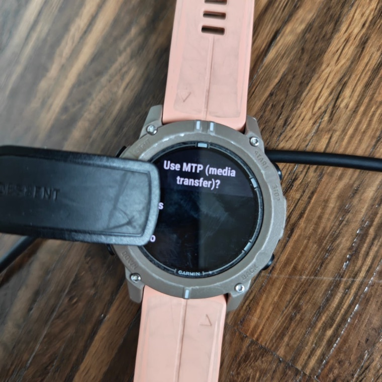
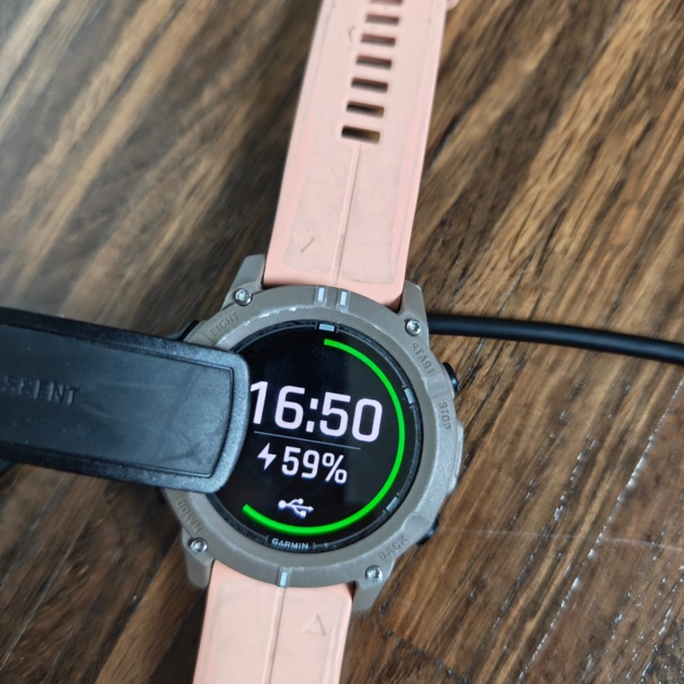
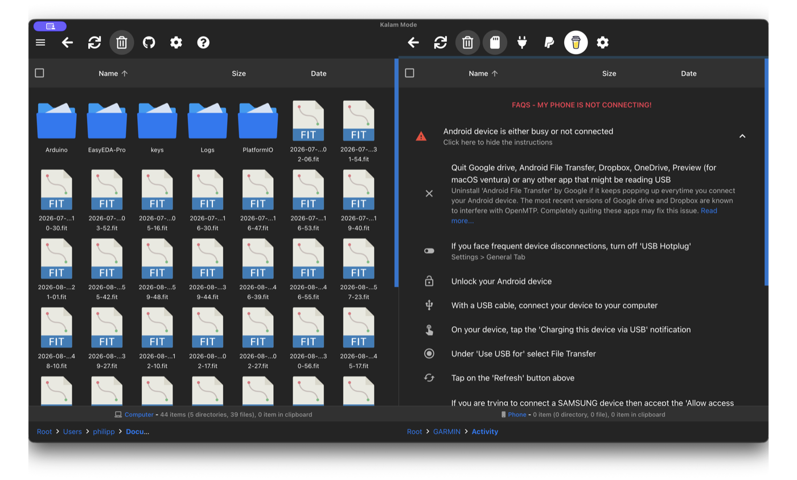
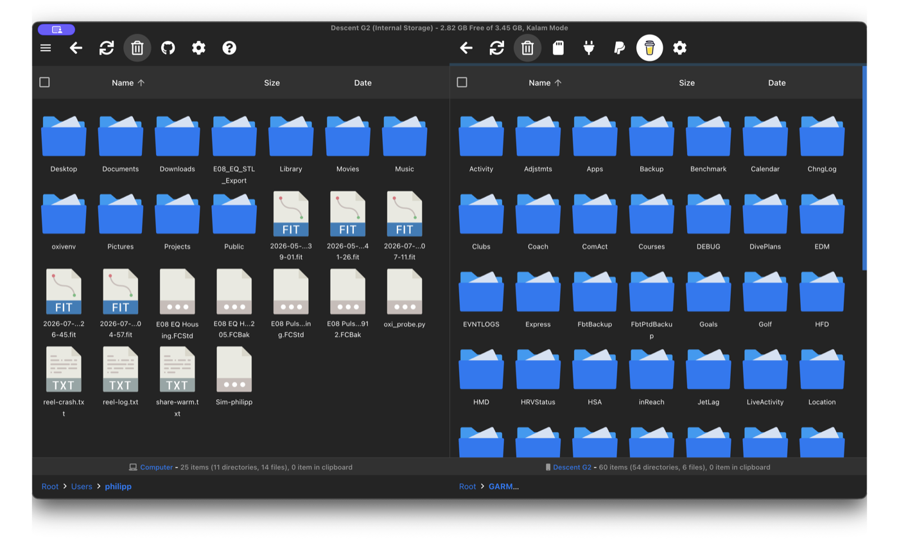
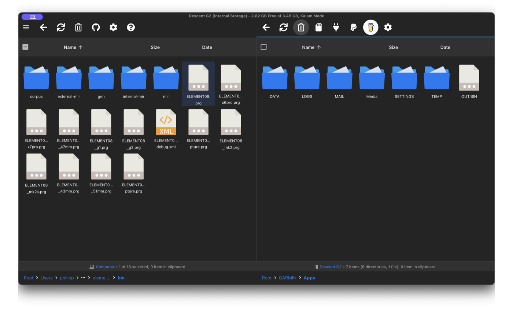
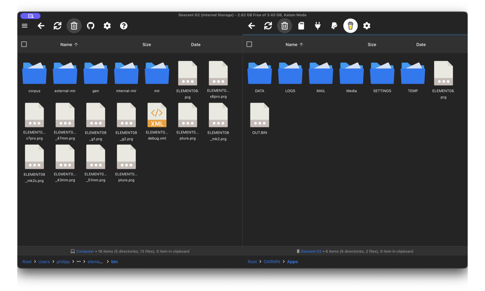
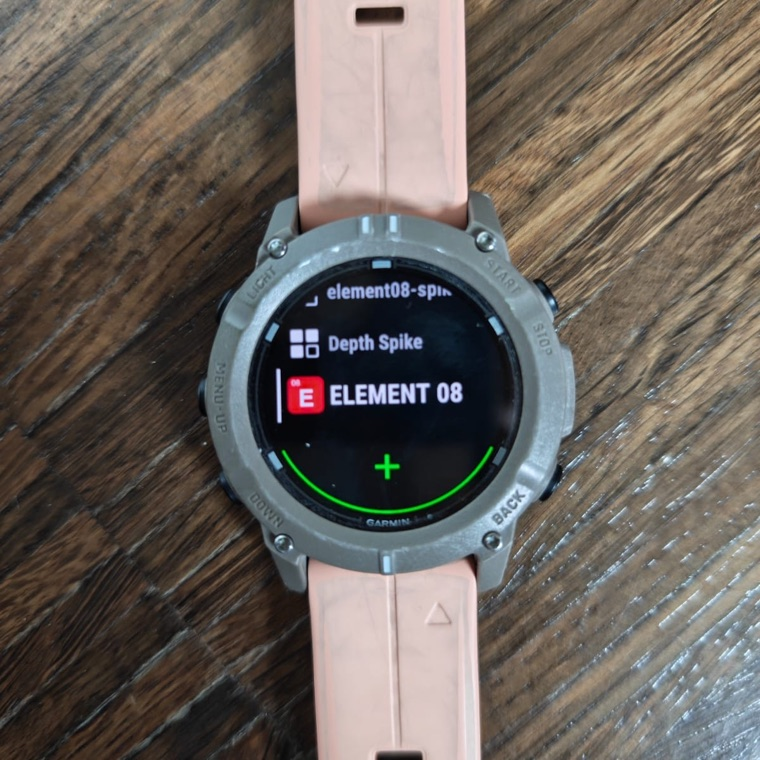

Last updated: August 30, 2026
The ELEMENT | 08 watch app is not on the Connect IQ store, and it will not be. Garmin does not list apps for freediving, scuba, skydiving or base-jumping at all: a blanket category rule, not a judgement about this app. So you install it yourself by copying one file to your watch over USB. It takes a few minutes and you only do it once.
New build, 30 August 2026. Fixes a crash that could lose a long session while it was saving, and lets the phone app see how much room your watch has so it can warn you before sending a training plan that will not fit. Worth updating.
Updating from an older version? Sync your watch first. Any sessions still waiting to transfer to your phone can be lost when the app is replaced. Open ELEMENT | 08 on your phone, let the watch finish sending, and check the sessions are in your logbook before you copy a new file across.
This app does not make breath-hold training safe. Never train in or near water alone, and never without a trained buddy within arm's reach. A watch cannot rescue you and a spectator is not a safety. Read Safety & Contraindications first if you have not.
You also need the ELEMENT | 08 phone app (iPhone or Android) to build sessions and receive your dives. The watch app on its own has nowhere to send them.
You will need a computer. This cannot be done from a phone.
Not every watch can do everything, and the differences are hardware, not software. Read this before you install, so nothing is a surprise afterwards.
| Descent G1 | Descent G2 / Mk2 / Mk3 fenix 7 and newer |
Apple Watch | |
|---|---|---|---|
| Run a session your phone sent you | Yes | Yes | Yes |
| Free training, no plan needed | Yes | Yes | Yes |
| Dive starts and ends on the water | Yes | Yes | Series 10 & Ultra |
| Heart rate through the session | Yes | Yes | Yes |
| Distance estimated for you | From your pace | From your motion | From your motion |
| Correct the distance on the watch | Yes | Yes | On the phone |
| Turns detected | No | Yes, with fins. Harder without. | Yes, on the phone |
| Signal trace to review afterwards | No | Yes | Yes |
| Mark your own strokes | No | Yes | Yes |
| Correct anything by hand in the app | Yes | Yes | Yes |
The Descent G1 is the honest exception. It has no gyroscope and very little memory, so it cannot record the motion trace the other watches produce. That means no turn detection, no signal trace and no stroke analysis on a G1 dive. What it does do it does well: it runs your session, brackets each dive from the water, records heart rate, and estimates distance from the pace it has learned from you, which you then correct with the buttons. If you came here for the trace, a G1 will not give it to you.
Turn detection is honest about being imperfect. With fins the signal is clear and it is right almost every time. Without fins, every arm stroke looks like a turn to a sensor, and it gets it wrong more often. Either way you can add, move or delete turns yourself in the app afterwards, and your correction always wins.
Every model needs its own file. Choosing the wrong one is the most common mistake, and the watch gives you no error: the app simply never appears.
Save it somewhere you will find again. Your Downloads folder is fine.
Descent G1 owners can skip this step. The G1 appears as an ordinary USB drive, so your computer can open it without help.
Every other model (G2, Mk2, Mk3, fenix, and the rest) uses a transfer mode called MTP. Windows understands it already, so Windows users can skip this step too. macOS cannot, because Apple only supports its own media devices, so Mac users need one free tool:
Download OpenMTP free and open source
Plug the watch into the computer with its charging cable. Use a cable you know carries data: many charging cables carry power only, and that looks exactly like a broken connection.
Now look at the watch. It asks "Use MTP (media transfer)?". Answer Yes. Until you do, the watch stays completely invisible to the computer.

Once you have answered, the watch shows a USB symbol. That is what "connected" looks like.

Descent G1, or any watch on Windows: the watch appears like a normal drive. Open it, then open the GARMIN folder, then Apps, and skip to step 6.
Everything else on macOS: open OpenMTP. It shows two panes: your computer on the left, the watch on the right.
The right pane will often say the device is not connected at first. This is normal and does not mean anything is wrong. Wait about 30 seconds after plugging in, then press the refresh button above the right pane.

The right pane then fills with the watch's folders.

In the left pane, navigate to wherever you saved the .prg file in step 1, most likely Downloads. In the right pane, open GARMIN and then Apps.

Apps folder on the right. You will have one .prg file, not a folder full of them.Drag the .prg file from the left pane into the watch's Apps folder on the right. When it appears there, you are done.

Eject or unplug the watch.
ELEMENT | 08 now appears in your watch's activity list, alongside the built-in activities.

To send a training session to it, open the phone app, build the session, and choose the watch as the target. Both apps need to be open while a session transfers.
Because the app is not on the Connect IQ store, it will not update itself. When a new version is released, come back here and copy the new file over the old one exactly the same way.
Sync everything before you update. Sessions the watch has recorded but not yet sent to your phone can be lost when the app is replaced. This has already happened to one diver, who lost three sessions.
If a session does not appear, it is still on the watch and it is also in the FIT the watch wrote, so Garmin Connect and a file import still have it. Sort that out before updating rather than after.